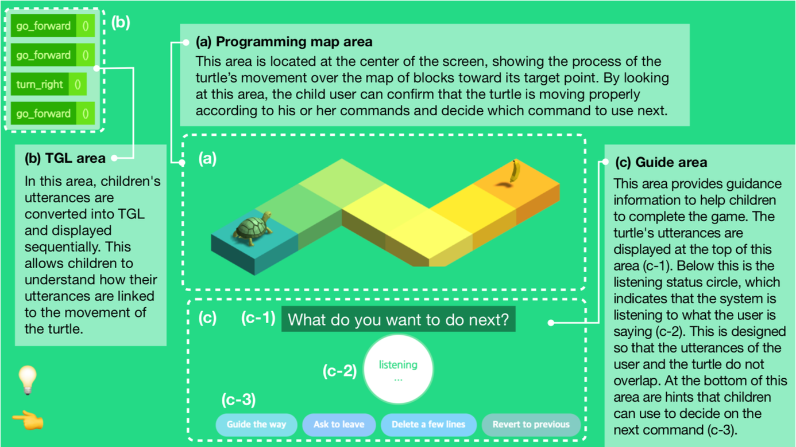
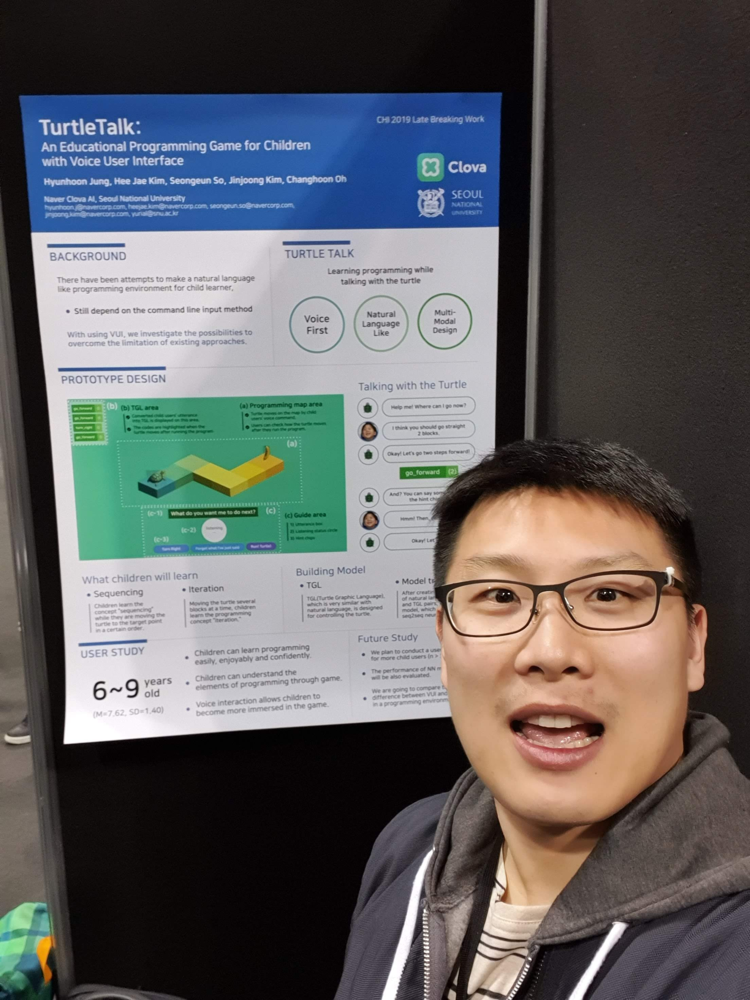

HCI Research: Voice UI & Accessibility
TurtleTalk: Real-Time Voice-to-Code on the Web
Context
At NAVER Clova AI, built a voice-driven programming game for children. Kids speak commands to a turtle character on screen, and the turtle moves accordingly, teaching sequencing and iteration through play.
Problem
Children express the same intent in wildly different ways: "go forward", "move ahead", "just go straight." The system needed to handle this variance in real time, but the harder frontend challenge was orchestrating the full loop on the web: capture speech, send it to the model, receive code back, render the result as game animation, all while maintaining a natural conversational flow with a 6-year-old.
Solution: Three Key Design Decisions
1. Designed a minimal DSL to constrain the problem space. Defined Turtle Graphic Language (TGL) with only go_forward, turn_right, and loop, constraining the model's output space to improve accuracy and keep behavior predictable for 6-year-olds.
2. Built the game interface with WebGL and real-time code visualization. Three synchronized panels: (a) WebGL-rendered isometric game map, (b) block-coding visualization showing translated TGL commands as the child speaks, (c) voice guide area with hints. Each updates independently so children see the full chain: speech → code → movement.

Three synchronized panels: Programming map / TGL area / Guide area
3. Integrated the full voice interaction pipeline on the web. Wired up Clova Speech API (STT/TTS) with turn-taking conversation flow: turtle guides → child commands → turtle confirms → executes. The challenge was coordinating async speech recognition, model inference, and UI state into a seamless conversational loop. Cancel and undo were also voice-driven, exposing debugging concepts naturally.
The seq2seq model was built by ML engineers on the team. My role covered DSL design, WebGL game rendering, block-coding visualization, voice pipeline integration, and end-to-end system orchestration.
Result
Shipped a real-time speech-to-code pipeline on the web, integrating Clova Speech API (STT/TTS) with a seq2seq model. Published at ACM CHI 2019. 50 citations, 905 downloads.
Links
Dimensional Alt Text
Co-authored a study proposing layered image descriptions using monocular depth estimation, enabling screen reader users to navigate foreground, middle ground, and background independently. Published at ACM CHI 2023.


ACM CHI 2019 · Glasgow

ACM CHI 2023 · Hamburg